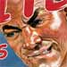
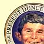

Politics Politics
God help America
If this is the finest democracy in the world, does it really deserve George W. Bush?
by The Daily Mirror
Dean Wins!
The incredible story of how Howard Dean became President of the United States by seizing the radical center.
by Tom Gogola
The Unfeeling President
He cannot mourn but is a figure of such moral vacancy as to make us mourn for ourselves.
by E.L. Doctorow
 The power and politics of Spite
A distressing but plausible theory as to why people vote against their own interests.
by Mark Ames
 The Brains Thing
Three years of watching Bush makes the point: Intelligence matters more than “character.”
by Matthew Yglesias
|


 The Bushiad and The Idyossey
The Bushiad and The Idyossey